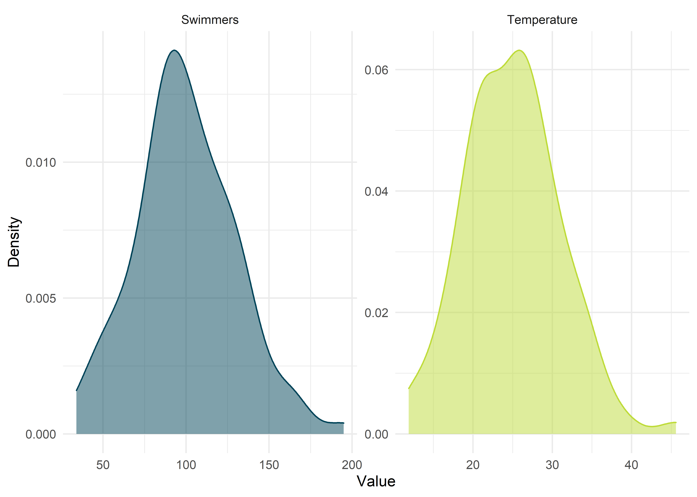
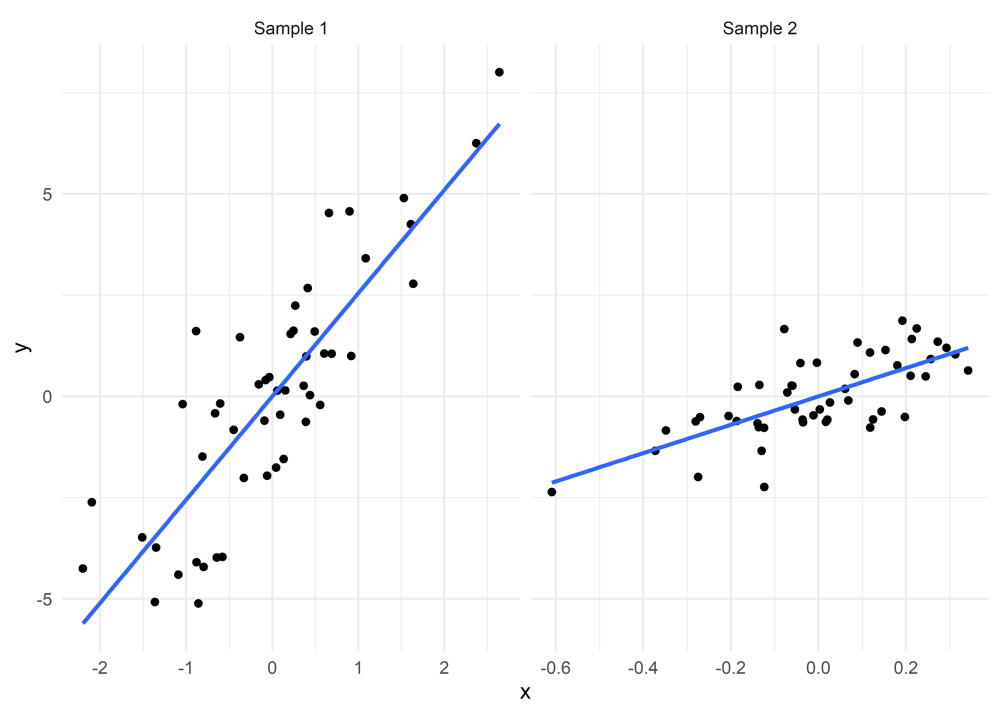
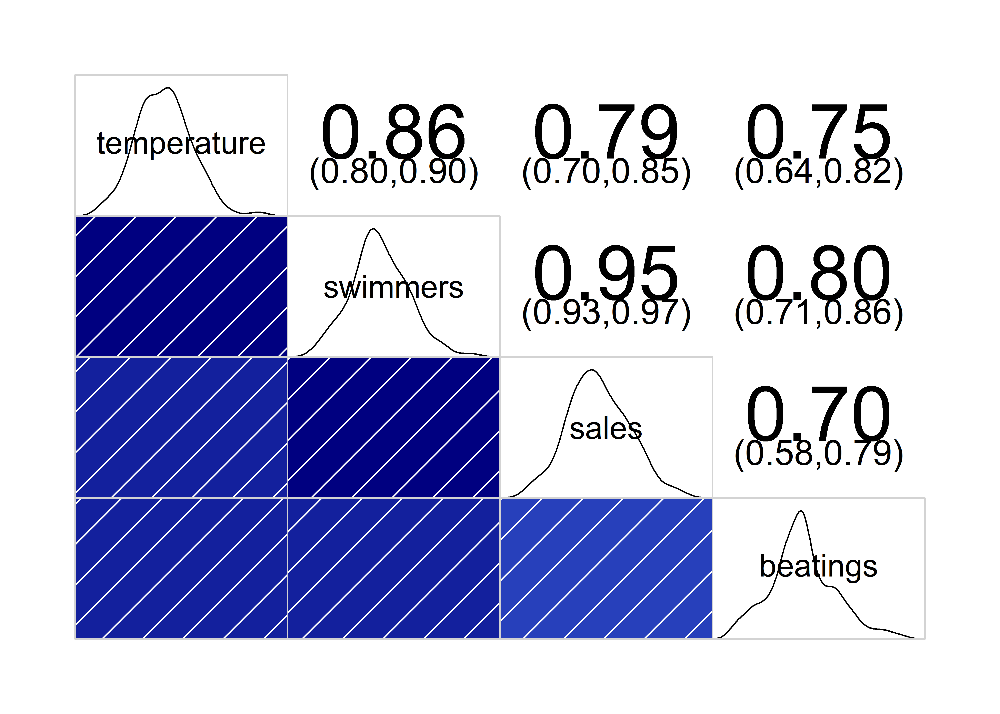

Korrelation

Mit einer Korrelation können wir statistische Zusammenhänge zwischen Variablen aufdecken und angeben, wie sehr diese “zusammenhängen”. Wichtig dabei ist, so viel schon einmal vorab, nicht den Zusammenhang an sich (die Korrelation) mit einer Ursache-Wirkungs-Beziehung (Kausalität) gleichzusetzen – einer der häufigsten und auch von erfahrenen Forschern immer noch begangener Fehler.
Pakete
Alle Berechnungen und Abbildungen können wir mit unseren Standardpaketen durchführen. Wir benötigen das tidyverse zum Data Wrangling und zur Visualisierung der Daten. haven benötigen wir für den Import von SPSS-Dateien und rstatix für statistische Analysen. Wenn man sich den Import und das Bereinigen der Daten sparen möchte (Schritte, die man dennoch üben sollte), findet man die Daten auch im Paket costatcompanion.
Beispiel 1
Wir sind mitten im heißen Sommer, lange Tage, laue Nächte, nach dem Duschen hat man Schweiß auf der Stirn und das letzte Mal, dass Querlüften funktioniert hat, ist schon einige Wochen her. Was könnten wir nun machen, um uns abukühlen? Richtig, wir könnten ins Freibad gehen! Mit einem dahinschmelzenden Calippo in der Hand fragt sich aber der geübte Statistiker: Ist es eigentlich jeden Tag so voll? Oder hängt die Anzahl der Schwimmer in diesem Freibad mit irgendetwas zusammen? Sofort fragt er den Kassenwart nach Daten, Daten, Daten! Und siehe da, tatsächlich führt das Freibad eine Liste darüber, an welchem Tag, wie viele Besucher kamen, inklusive einiger anderer Faktoren, wie z.B. der Durchschnitts-Temperatur.
Klassisch
Den Datensatz water_park finden wir im Paket costatcompanion. In der ersten Spalte (day_id) finden wir eine individuelle ID des beobachteten Tages (in zufälliger Reihenfolge). Nachfolgend finden wir vier Variablen, die an jedem Tag gemessen wurden. Dazu zählen die Durchschnitts-Temperatur (temperature), die Anzahl der Schwimmer im Schwimmbecken (swimmers), den Tages-Umsatz des Freibad-Kiosks in Euro (sales) und die Anzahl der Schlägereien, wegen der die Polizei gerufen werden musste (beatings).
## # A tibble: 100 x 5
## day_id temperature swimmers sales beatings
## <chr> <dbl> <dbl> <dbl> <dbl>
## 1 1 28.9 106 1554 7
## 2 2 34.4 142 2261 7
## 3 3 25.1 72 1232 4
## 4 4 21.8 50 823 5
## 5 5 39 167 2661 10
## 6 6 21.4 81 1025 4
## 7 7 26.7 111 1895 7
## 8 8 25 128 2153 8
## 9 9 12.7 37 534 1
## 10 10 16.3 56 829 1
## # ... with 90 more rowsVoraussetzungen
Da wir uns im GLM bewegen, gelten die üblichen Voraussetzungen. Vor allem sollten die Daten jedoch auf Linearität und potenzielle Ausreißer geprüft werden!
EDA
Zunächst wollen wir untersuchen, ob die Durchschnitts-Temperatur eines beobachteten Tages mit der Anzahl der Schwimmer im Schwimmbecken zusammenhängt. Wir könnten spontan vermuten, dass es mehr Schwimmer bei höheren Temperaturen gibt.
Eine gute Idee ist, sich deskriptive Statistiken zu seinen untersuchten Variablen auszugeben und sich deren Verteilungen anzuschauen.
## # A tibble: 2 x 13
## variable n min max median q1 q3 iqr mad mean sd se ci
## <chr> <dbl> <dbl> <dbl> <dbl> <dbl> <dbl> <dbl> <dbl> <dbl> <dbl> <dbl> <dbl>
## 1 swimmers 100 34 195 97 82 121 39 28.2 100. 30.0 3.00 5.95
## 2 temperature 100 11.9 45.6 25.1 21.0 28.9 7.98 6.00 25.0 6.00 0.6 1.19
Eine weitere gute Idee wäre, sich einen vermuteten Zusammenhang graphisch als Streudiagramm darstellen zu lassen. Hier finden wir einen guten linearen Zusammenhang, der genau das nahelegt: Je höher die Temperatur (je weiter man auf der \(x\)-Achse nach rechts geht), desto mehr Schwimmer wurden beobachtet (desto höher liegen die Punkte).
water_park %>%
ggplot(aes(temperature, swimmers)) +
geom_point() +
labs(x = "Temperature", y = "Swimmers") +
expand_limits(y = 0, x = 0)
Durchführung
Die eigentliche Berechnung einer Korrelation ist einfach und auch der Output hält sich in engen Grenzen:
## # A tibble: 1 x 8
## var1 var2 cor statistic p conf.low conf.high method
## <chr> <chr> <dbl> <dbl> <dbl> <dbl> <dbl> <chr>
## 1 temperature swimmers 0.86 16.7 2.25e-30 0.798 0.904 PearsonWir erhalten einen statistisch signifikanten Zusammenhang, \(r = .860 [.798, .904], p < .001\). Berechnet wird standardmäßig der Korrelationskoeffizient nach Pearson (\(r\)), auch Produkt-Moment-Korrelation bezeichnet.
Berichten
We found a significant correlation between an observed day’s temperature and the amount of swimmers in the pool, \(r = .860 [.798, .904], p < .001\).
Robust
Natürlich hat Rand Wilcox (2017) auch für Korrelationen vorgesorgt und stellt uns im Paket WRS2 (Mair & Wilcox, 2020) robuste Methoden zur Berechnung von Korrelationen zur Verfügung. Einmal gibt es die percentage bend correlation (\(\rho_{pb}\), pbcor()) und einmal die Korrelation auf Basis von winsorized Daten (\(\rho_w\), wincor())
## Call:
## pbcor(x = temperature, y = swimmers)
##
## Robust correlation coefficient: 0.8256
## Test statistic: 14.4861
## p-value: 0## Call:
## wincor(x = temperature, y = swimmers)
##
## Robust correlation coefficient: 0.7894
## Test statistic: 12.7312
## p-value: 0Die percentage bend correlation beträgt \(\rho_{pb} = .823, p < .001\) und die Korrelation basierend auf winsorized Daten \(\rho_w = ,789, p < .001\).
Non-parametrisch
Wer entgegen aller Empfehlungen trotzdem non-parametrisch rechnen möchte, der kann auf zwei bekannte Verfahren zurückgreifen. Zum einen den Korrelationskoeffizinten nach Spearman (\(r_s\)), gelegentlich auch Spearmans Rho (\(\rho\)) bezeichnet, und zum anderen Kendalls Tau (\(\tau\)). Nach Howell (1997) ist \(\tau\) zu bevorzugen. Berechnen tun wir beide non-parametrischen Varianten mit derselben Funktion wie Pearsons \(r\), geben jedoch unser gewünschtes Verfahren als Metode an.
## # A tibble: 1 x 6
## var1 var2 cor statistic p method
## <chr> <chr> <dbl> <dbl> <dbl> <chr>
## 1 temperature swimmers 0.82 29332. 6.43e-26 Spearman## # A tibble: 1 x 6
## var1 var2 cor statistic p method
## <chr> <chr> <dbl> <dbl> <dbl> <chr>
## 1 temperature swimmers 0.65 9.56 1.14e-21 KendallEine gute Möglichkeit, sich angesichts der doch unterschiedlichen Ergebnisse nicht zwischen beiden Verfahren im Nachhinein zu entscheiden (Stichwort \(p\)-Hacking!), ist das vorherige Festlegen des Verfahrens.
Interpretation
Varianzaufklärung
Den Korrelationskoeffizienten \(r\) kann man qudrieren und erhält \(R^2\), das Bestimmtheitsmaß oder Determinationskoeffizient gennant wird – je nachdem, wie sehr man gerade mit einem statistischen Wissen angeben will. \(R^2\) gibt an, wie viel Varianz zwei Variablen miteinander teilen. Ist der Korrelationskoeffizient zwischen zwei Variablen zum Beispiel \(r = 0.80\), dann teilen sich diese beiden Variablen aus der Gesamtvarianz der Daten einen Anteil von \(R^2 = .80^2 \Leftrightarrow R^2 = 0.64\), also 64%.
Stärke eines Zusammenhangs
Sehr viele Leute, wenn nicht alle, verwechseln regelmäßig die Stärke eines Zusammenhangs mit der Größe eines Zusammenhangs. Man kann schnell für sich testen, ob man denselben Fehler machen würde. Betrachten wir die beiden folgenden Abbildungen: In welcher ist die Korrelation größer?
sample_1 <- MASS::mvrnorm(50, mu = c(0,0), Sigma = matrix(c(1,0.85,0.85,1), ncol = 2), empirical = TRUE) %>%
as_tibble(.name_repair = "unique") %>%
rename(x = "...1", y = "...2") %>%
mutate(sample = "sample_1",
y = y * 3)## New names:
## * `` -> ...1
## * `` -> ...2sample_2 <- MASS::mvrnorm(50, mu = c(0,0), Sigma = matrix(c(1,0.70,0.70,1), ncol = 2), empirical = TRUE) %>%
as_tibble(.name_repair = "unique") %>%
rename(x = "...1", y = "...2") %>%
mutate(sample = "sample_2",
x = x * 0.2)## New names:
## * `` -> ...1
## * `` -> ...2bind_rows(sample_1, sample_2) %>%
mutate(sample = str_to_title(sample), sample = str_replace(sample, pattern = "_", replacement = " ")) %>%
ggplot(aes(x, y)) +
geom_point() +
geom_smooth(method = "lm", se = FALSE) +
facet_wrap(~ sample, scales = "free_x")## `geom_smooth()` using formula 'y ~ x'
Wer sich für die linke Seite entschieden hat, ist nicht alleine und liegt gleichzeitig gnadenlos daneben. Die Korrelation ist rechts (\(r = .850\)) nämlich deutlich höher als links (\(r = .700\)). Trotzdem entscheiden sich viele für die Linke Abbildung. Wieso? Weil sie eben die Stärke der Korrelation, also die Stärke des Zusammenhangs mit der Größe des Zusammenhangs verwechseln.
Die Stärke eines Zusammenhangs gibt nicht an, wie “steil” die Punkt sind, sondern wie eng sie um eine Linie fallen. Je enger die Punkte um die eingezeichnete Linie fallen, desto größer ist die Korrelation. Wie “steil” die Gerade ist, wie groß also der Zusammenhang zwischen zwei Variablen ist, ist eine Frage, auf die die Regression Antworten hat.
Was folgt daraus? Die Stärke und die Größe eines Zusammenhangs sind voneinander unabhängig und müssen immer einzeln beurteilt werden. Es kann bspw. sein, dass es Zusammenhänge gibt, die total klein, aber extrem stark sind. Hier muss man sich dann die Frage stellen, ob dieser Zusammenhang irgendwelche klinischen/bedeutenden Implikationen mit sich bringt.
MASS::mvrnorm(500, mu = c(0,0), Sigma = matrix(c(1,0.90,0.90,1), ncol = 2), empirical = TRUE) %>%
as_tibble(.name_repair = "unique") %>%
rename(x = "...1", y = "...2") %>%
mutate(sample = "sample_1",
y = y * 0.2) %>%
ggplot(aes(x, y)) +
geom_point() +
expand_limits(y = c(-3, 3))## New names:
## * `` -> ...1
## * `` -> ...2
Korrelation und Kausalität
Nur weil zwei Variablen zusammenhängen, heißt das nicht, dass die eine Variable die andere kausal, also ursächlich, beeinflusst. In unserem Beispiel oben haben wir uns den Zusammenhang zwischen Tages-Temperatur und Anzahl von Schwimmern im Schwimmbecken angeschaut. Aber nur, weil wir eine signifikante Korrelation gefunden haben, heißt das nicht, dass heißere Tage die Ursache für mehr Schwimmer waren (siehe auch Beispiel 2 unten). Was nun ursächlich für eine Variable oder ein Merkmal ist, kann letzten Endes nicht durch statistische Verfahren beurteilt werden, sondern entspringt einer adäquaten Versuchsplanung und fällt in den Bereich der experimentellen Methoden (!) Hat man seine Untersuchung nicht darauf ausgelegt, kann man rechnen, was man will, aber man wird nie auf einen kausalen Zusammenhang schließen können.
Beispiel 2
Klassisch
Natürlich sind wir nicht darauf beschränkt, uns einzelne Variablen rauszupicken und so einzeln mal eine Korrelation zu berechnen. Wir können das auch über mehrere Variablen gleichzeitig machen. Unser Datensatz water_park enthält vier abhängige Variablen, deren Korrelationen wir uns einmal gleichzeitig anschauen können.
## # A tibble: 4 x 13
## variable n min max median q1 q3 iqr mad mean sd se ci
## <chr> <dbl> <dbl> <dbl> <dbl> <dbl> <dbl> <dbl> <dbl> <dbl> <dbl> <dbl> <dbl>
## 1 beatings 100 1 11 5 4 6 2 1.48 5.01 2.02 0.202 0.401
## 2 sales 100 410 2837 1476 1156. 1861. 706. 554. 1500. 500. 50 99.2
## 3 swimmers 100 34 195 97 82 121 39 28.2 100. 30.0 3.00 5.95
## 4 temperature 100 11.9 45.6 25.1 21.0 28.9 7.98 6.00 25.0 6.00 0.6 1.19## # A tibble: 4 x 5
## rowname temperature swimmers sales beatings
## * <chr> <dbl> <dbl> <dbl> <dbl>
## 1 temperature 1 0.86 0.79 0.75
## 2 swimmers 0.86 1 0.95 0.8
## 3 sales 0.79 0.95 1 0.7
## 4 beatings 0.75 0.8 0.7 1Um nun beurteilen zu können, ob diese Zusammenhänge statistisch signifikant sind, können wir die Funktion cor_get_pval() anhängen und erhalten die korrespondierenen \(p\)-Werte der eben erstellten Korrelationen.
## # A tibble: 4 x 5
## rowname temperature swimmers sales beatings
## <chr> <dbl> <dbl> <dbl> <dbl>
## 1 temperature 0. 2.25e-30 1.58e-22 4.99e-19
## 2 swimmers 2.25e-30 0. 1.76e-51 2.25e-23
## 3 sales 1.58e-22 1.76e-51 0. 5.36e-16
## 4 beatings 4.99e-19 2.25e-23 5.36e-16 0.Bei insgesamt vier Variablen haben wir noch einen guten Überblick, aber mit wachsendem Datensatz kann dieser Überblick schnell verloren gehen. Eine gute Möglichkeit, sich viele Korrelationen auf einmal anzuschauen liefert ein Korrelogramm, das wir mit dem Paket corrgram erstellen können.
library(corrgram)
outcomes <- water_park %>%
select(-day_id) %>%
corrgram(upper.panel = panel.conf,
diag.panel = panel.density)
Interessant ist, dass alle Variablen miteinander positiv korrelieren. Und auch hier müssen wir ganz klar in unserer Interpretation sein. Die Variablen hängen zusammen, aber verursachen sich nicht kausal. Denn letzteres würde bedeuten, dass höhere Temperaturen zu mehr Schlägereien führten, höhere Verkaufs-Umsetze des Kiosks zu höheren Temperaturen, oder mehr Schlägereien zu höheren Tages-Umsetzen. Das macht alles nicht wirklich Sinn, und daran kann man gut erkennen, dass Korrelationen keine Kausalitäten liefern.
Robust
Für percentage bend correlations nutzen wir pball(), für Korrelationen basierend auf winsorized Daten winall().
## Call:
## pball(x = .)
##
## Robust correlation matrix:
## temperature swimmers sales beatings
## temperature 1.0000 0.8256 0.7576 0.7014
## swimmers 0.8256 1.0000 0.9458 0.7703
## sales 0.7576 0.9458 1.0000 0.6760
## beatings 0.7014 0.7703 0.6760 1.0000
##
## p-values:
## temperature swimmers sales beatings
## temperature NA 0 0 0
## swimmers 0 NA 0 0
## sales 0 0 NA 0
## beatings 0 0 0 NA
##
##
## Test statistic H: Inf, p-value = 0## Call:
## winall(x = .)
##
## Robust correlation matrix:
## temperature swimmers sales beatings
## temperature 1.0000 0.7894 0.7089 0.5975
## swimmers 0.7894 1.0000 0.9362 0.6926
## sales 0.7089 0.9362 1.0000 0.6245
## beatings 0.5975 0.6926 0.6245 1.0000
##
## p-values:
## temperature swimmers sales beatings
## temperature NA 0 0 0
## swimmers 0 NA 0 0
## sales 0 0 NA 0
## beatings 0 0 0 NANon-parametrisch
Für non-parametrische Tests, von deren Verwendung hier im Zuge der zur Verfügung stehenden robusten Tests wieder entschieden abgeraten wird, gehen wir genau so wie bei der parametrischen Variante vor, aber geben auch hier wieder eine andere Methode als Funktions-Argument mit.
## # A tibble: 4 x 5
## rowname temperature swimmers sales beatings
## * <chr> <dbl> <dbl> <dbl> <dbl>
## 1 temperature 1 0.82 0.75 0.7
## 2 swimmers 0.82 1 0.95 0.75
## 3 sales 0.75 0.95 1 0.66
## 4 beatings 0.7 0.75 0.66 1## # A tibble: 4 x 5
## rowname temperature swimmers sales beatings
## <chr> <dbl> <dbl> <dbl> <dbl>
## 1 temperature 0. 6.43e-26 2.36e-19 1.02e-15
## 2 swimmers 6.43e-26 0. 1.37e-49 4.62e-19
## 3 sales 2.36e-19 1.37e-49 0. 8.92e-14
## 4 beatings 1.02e-15 4.62e-19 8.92e-14 0.## # A tibble: 4 x 5
## rowname temperature swimmers sales beatings
## * <chr> <dbl> <dbl> <dbl> <dbl>
## 1 temperature 1 0.65 0.570 0.55
## 2 swimmers 0.65 1 0.81 0.6
## 3 sales 0.570 0.81 1 0.51
## 4 beatings 0.55 0.6 0.51 1## # A tibble: 4 x 5
## rowname temperature swimmers sales beatings
## <chr> <dbl> <dbl> <dbl> <dbl>
## 1 temperature 1.17e-48 1.14e-21 6.23e-17 4.44e-14
## 2 swimmers 1.14e-21 2.18e-48 2.16e-32 1.09e-16
## 3 sales 6.23e-17 2.16e-32 3.79e-49 1.33e-12
## 4 beatings 4.44e-14 1.09e-16 1.33e-12 2.83e-38Aus der Praxis
Folgt.
Klassisch
EDA
Durchführung
Berichten
Robust
Literatur
Howell, D. C. (1997). Statistical Methods for Psychology (4th ed.). Duxbury Press.
Mair, P., & Wilcox, R. R. (2020). Robust statistical methods in R using the WRS2 package. Behavior Research Methods, 52(2), 464–488. https://doi.org/10.3758/s13428-019-01246-w
Wilcox, R. R. (2017). Introduction to Robust Estimation and Hypothesis Testing (4th ed.). Elsevier Academic Press.